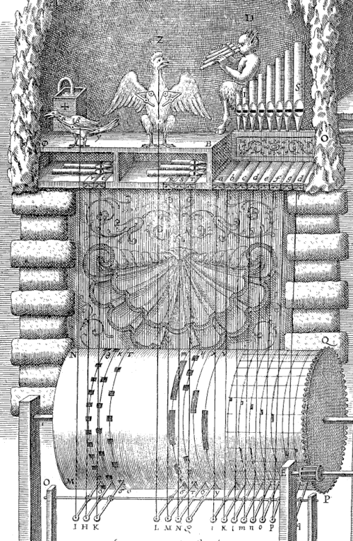
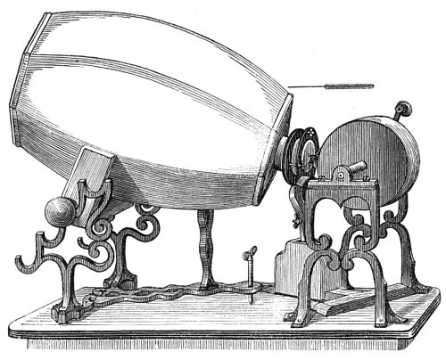
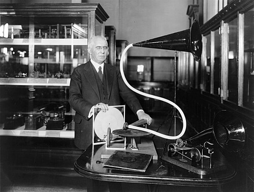
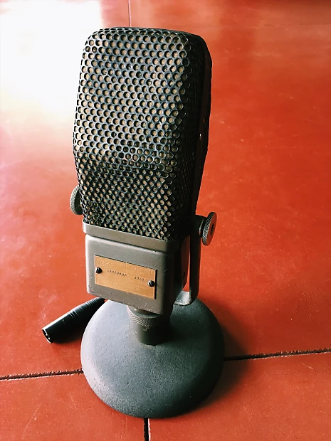
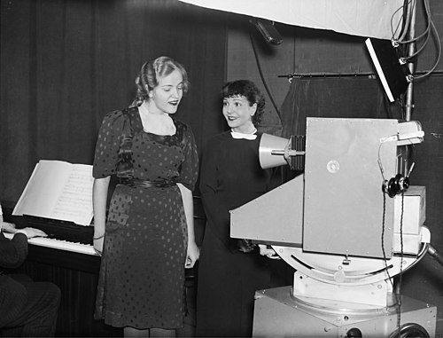
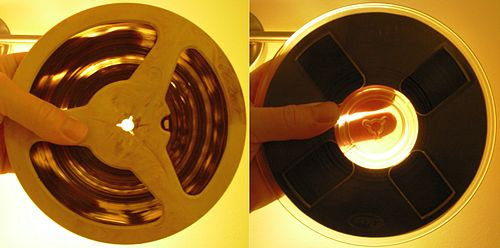
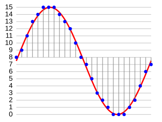

Sound recording and reproduction is the electrical, mechanical, electronic, or digital inscription and re-creation of sound waves, such as spoken voice, singing, instrumental music, or sound effects. The two main classes of sound recording technology are analog recording and digital recording.
Acoustic analog recording is achieved by a microphone diaphragm that senses changes in atmospheric pressure caused by acoustic sound waves and records them as a mechanical representation of the sound waves on a medium such as a phonograph record (in which a stylus cuts grooves on a record). In magnetic tape recording, the sound waves vibrate the microphone diaphragm and are converted into a varying electric current, which is then converted to a varying magnetic field by an electromagnet, which makes a representation of the sound as magnetized areas on a plastic tape with a magnetic coating on it. Analog sound reproduction is the reverse process, with a larger loudspeaker diaphragm causing changes to atmospheric pressure to form acoustic sound waves.
Digital recording and reproduction converts the analog sound signal picked up by the microphone to a digital form by the process of sampling. This lets the audio data be stored and transmitted by a wider variety of media. Digital recording stores audio as a series of binary numbers (zeros and ones) representing samples of the amplitude of the audio signal at equal time intervals, at a sample rate high enough to convey all sounds capable of being heard. A digital audio signal must be reconverted to analog form during playback before it is amplified and connected to a loudspeaker to produce sound.
Early History
Long before sound was first recorded, music was recorded—first by written music notation, then also by mechanical devices (e.g., wind-up music boxes, in which a mechanism turns a spindle, which plucks metal tines, thus reproducing a melody). Automatic music reproduction traces back as far as the 9th century, when the Banū Mūsā brothers invented the earliest known mechanical musical instrument, in this case, a hydropowered (water-powered) organ that played interchangeable cylinders. According to Charles B. Fowler, this ... cylinder with raised pins on the surface remained the basic device to produce and reproduce music mechanically until the second half of the nineteenth century.

Mechanical organ, 1650
Carvings in the Rosslyn Chapel from the 1560s may represent an early attempt to record the Chladni patterns produced by sound-in-stone representations, although this theory has not been conclusively proved.
In the 14th century, a mechanical bell-ringer controlled by a rotating cylinder was introduced in Flanders. Similar designs appeared in barrel organs (15th century), musical clocks (1598), barrel pianos (1805), and music boxes (c. 1800). A music box is an automatic musical instrument that produces sounds by the use of a set of pins placed on a revolving cylinder or disc so as to pluck the tuned teeth (or lamellae) of a steel comb.
The fairground organ, developed in 1892, used a system of accordion-folded punched cardboard books. The player piano, first demonstrated in 1876, used a punched paper scroll that could store a long piece of music. The most sophisticated of the piano rolls were hand-played, meaning that they were duplicates from a master roll that had been created on a special piano, which punched holes in the master as a live performer played the song. Thus, the roll represented a recording of the actual performance of an individual, not just the more common method of punching the master roll through transcription of the sheet music. This technology to record a live performance onto a piano roll was not developed until 1904. Piano rolls were in continuous mass production from 1896 to 2008.[5][6] A 1908 U.S. Supreme Court copyright case noted that, in 1902 alone, there were between 70,000 and 75,000 player pianos manufactured, and between 1,000,000 and 1,500,000 piano rolls produced.
Phonautograph

An early phonautograph (1859). The barrel, for receiving sound, is made of plaster of paris.Detail of a phonautogram made in 1859
The first device that could record actual sounds as they passed through the air (but could not play them back—the purpose was only visual study) was the phonautograph, patented in 1857 by Parisian inventor Édouard-Léon Scott de Martinville. The earliest known recordings of the human voice are phonautograph recordings, called phonautograms, made in 1857. They consist of sheets of paper with sound-wave-modulated white lines created by a vibrating stylus that cut through a coating of soot as the paper was passed under it. Scott believed that future technology would allow the traces to be deciphered as a kind of "natural stenography".x Intended as a laboratory instrument for the study of acoustics, it was used to visually study and measure the amplitude envelopes and waveforms of speech and other sounds or to determine the frequency of a given musical pitch by comparison with a simultaneously recorded reference frequency.
It did not occur to anyone before the 1870s that the recordings, called phonautograms, contained enough information about the sound that they could, in theory, be used to recreate it. Because the phonautogram tracing was an insubstantial two-dimensional line, direct physical playback was impossible in any case. However, several phonautograms recorded before 1861 were successfully converted and played as sound in 2008 by optically scanning them and using a computer to process the scans into digital audio files.
Phonograph
Thomas Edison's work on two other innovations, the telegraph and the telephone, led to the development of the phonograph. Edison was working on a machine in 1877 that would transcribe telegraphic signals onto paper tape, which could then be transferred over the telegraph again and again. The phonograph was both in a cylinder and a disc form.
Cylinder
On April 30, 1877, French poet, humorous writer and inventor Charles Cros submitted a sealed envelope containing a letter to the Academy of Sciences in Paris fully explaining his proposed method, called the paleophone. Though no trace of a working paleophone was ever found, Cros is remembered by some historians as an early inventor of a sound recording and reproduction machine.
The first practical sound recording and reproduction device was the mechanical phonograph cylinder, invented by Thomas Edison in 1877 and patented in 1878. The invention soon spread across the globe and over the next two decades the commercial recording, distribution, and sale of sound recordings became a growing new international industry, with the most popular titles selling millions of units by the early 1920s. A process for mass-producing duplicate wax cylinders by molding instead of engraving them was put into effect in 1901. The development of mass-production techniques enabled cylinder recordings to become a major new consumer item in industrial countries and the cylinder was the main consumer format from the late 1880s until around 1910.
Disc
The next major technical development was the invention of the gramophone record, generally credited to Emile Berliner[by whom?] and patented in 1887, though others had demonstrated similar disk apparatus earlier, most notably Alexander Graham Bell in 1881. Discs were easier to manufacture, transport and store, and they had the additional benefit of being marginally louder than cylinders. Sales of the gramophone record overtook the cylinder ca. 1910, and by the end of World War I the disc had become the dominant commercial recording format. Edison, who was the main producer of cylinders, created the Edison Disc Record in an attempt to regain his market. The double-sided (nominally 78 rpm) shellac disc was the standard consumer music format from the early 1910s to the late 1950s. In various permutations, the audio disc format became the primary medium for consumer sound recordings until the end of the 20th century.
Although there was no universally accepted speed, and various companies offered discs that played at several different speeds, the major recording companies eventually settled on a de facto industry standard of nominally 78 revolutions per minute. The specified speed was 78.26 rpm in America and 77.92 rpm throughout the rest of the world. The difference in speeds was due to the difference in the cycle frequencies of the AC electricity that powered the stroboscopes used to calibrate recording lathes and turntables.[18] The nominal speed of the disc format gave rise to its common nickname, the seventy-eight (though not until other speeds had become available). Discs were made of shellac or similar brittle plastic-like materials, played with needles made from a variety of materials including mild steel, thorn, and even sapphire. Discs had a distinctly limited playing life that varied depending on how they were manufactured.

Emile Berliner with disc record gramophone
Earlier, purely acoustic methods of recording had limited sensitivity and frequency range. Mid-frequency range notes could be recorded, but very low and very high frequencies could not. Instruments such as the violin were difficult to transfer to disc. One technique to deal with this involved using a Stroh violin, which uses a conical horn connected to a diaphragm that in turn is connected to the violin bridge. The horn was no longer needed once electrical recording was developed.
The long-playing 331⁄3 rpm microgroove LP record, was developed at Columbia Records and introduced in 1948. The short-playing but convenient 7-inch (18 cm) 45 rpm microgroove vinyl single was introduced by RCA Victor in 1949. In the US and most developed countries, the two new vinyl formats completely replaced 78 rpm shellac discs by the end of the 1950s, but in some corners of the world, the 78 lingered on far into the 1960s. Vinyl was much more expensive than shellac, one of the several factors that made its use for 78 rpm records very unusual, but with a long-playing disc the added cost was acceptable. The compact 45 format required very little material. Vinyl offered improved performance, both in stamping and in playback. Vinyl records were, over-optimistically, advertised as "unbreakable". They were not, but they were much less fragile than shellac, which had itself once been touted as unbreakable compared to wax cylinders.
Electrical
Sound recording began as a purely mechanical process. Except for a few crude telephone-based recording devices with no means of amplification, such as the telegraphone,[a] it remained so until the 1920s. Between the invention of the phonograph in 1877 and the first commercial digital recordings in the early 1970s, arguably the most important milestone in the history of sound recording was the introduction of what was then called electrical recording, in which a microphone was used to convert the sound into an electrical signal that was amplified and used to actuate the recording stylus. This innovation eliminated the horn sound resonances characteristic of the acoustic process, produced clearer and more full-bodied recordings by greatly extending the useful range of audio frequencies, and allowed previously unrecordable distant and feeble sounds to be captured. During this time, several radio-related developments in electronics converged to revolutionize the recording process. These included improved microphones and auxiliary devices such as electronic filters, all dependent on electronic amplification to be of practical use in recording.
In 1906, Lee De Forest invented the Audion triode vacuum tube, an electronic valve that could amplify weak electrical signals. By 1915, it was in use in long-distance telephone circuits that made conversations between New York and San Francisco practical. Refined versions of this tube were the basis of all electronic sound systems until the commercial introduction of the first transistor-based audio devices in the mid-1950s.
During World War I, engineers in the United States and Great Britain worked on ways to record and reproduce various sounds, including German U-boat for training purposes. Acoustical recording methods of the time could not reproduce the sounds accurately. The earliest results were not promising.
The first electrical recording issued to the public, with little fanfare, was of the November 11, 1920, funeral service for The Unknown Warrior in Westminster Abbey, London. The recording engineers used microphones of the type used in contemporary telephones. Four were discreetly set up in the abbey and wired to recording equipment in a vehicle outside. Although electronic amplification was used, the audio was weak and unclear, as only possible in those circumstances. For several years, this little-noted disc remained the only issued electrical recording.
Several record companies and independent inventors, notably Orlando Marsh, experimented with equipment and techniques for electrical recording in the early 1920s. Marsh's electrically recorded Autograph Records were already being sold to the public in 1924, a year before the first such offerings from the major record companies, but their overall sound quality was too low to demonstrate any obvious advantage over traditional acoustical methods. Marsh's microphone technique was idiosyncratic and his work had little if any impact on the systems being developed by others.

RCA-44, a classic ribbon microphone introduced in 1932. Similar units were widely used for recording and broadcasting in the 1940s and are occasionally still used today.
Telephone industry giant Western Electric had research laboratories[b] with material and human resources that no record company or independent inventor could match. They had the best microphone, a condenser type developed there in 1916 and greatly improved in 1922, and the best amplifiers and test equipment. They had already patented an electromechanical recorder in 1918, and in the early 1920s, they decided to intensively apply their hardware and expertise to developing two state-of-the-art systems for electronically recording and reproducing sound: one that employed conventional discs and another that recorded optically on motion picture film. Their engineers pioneered the use of mechanical analogs of electrical circuits and developed a superior rubber line recorder for cutting the groove into the wax master in the disc recording system.
By 1924, such dramatic progress had been made that Western Electric arranged a demonstration for the two leading record companies, the Victor Talking Machine Company and the Columbia Phonograph Company. Both soon licensed the system and both made their earliest published electrical recordings in February 1925, but neither actually released them until several months later. To avoid making their existing catalogs instantly obsolete, the two long-time archrivals agreed privately not to publicize the new process until November 1925, by which time enough electrically recorded repertory would be available to meet the anticipated demand. During the next few years, the lesser record companies licensed or developed other electrical recording systems. By 1929 only the budget label Harmony was still issuing new recordings made by the old acoustic process.
Comparison of some surviving Western Electric test recordings with early commercial releases indicates that the record companies artificially reduced the frequency range of recordings so they would not overwhelm non-electronic playback equipment, which reproduced very low frequencies as an unpleasant rattle and rapidly wore out discs with strongly recorded high frequencies.
Optical and Magnetic
In the 1920s, Phonofilm and other early motion picture sound systems employed optical recording technology, in which the audio signal was graphically recorded on photographic film. The amplitude variations comprising the signal were used to modulate a light source which was imaged onto the moving film through a narrow slit, allowing the signal to be photographed as variations in the density or width of a sound track. The projector used a steady light and a photodetector to convert these variations back into an electrical signal, which was amplified and sent to loudspeakers behind the screen. Optical sound became the standard motion picture audio system throughout the world and remains so for theatrical release prints despite attempts in the 1950s to substitute magnetic soundtracks. Currently, all release prints on 35 mm movie film include an analog optical soundtrack, usually stereo with Dolby SR noise reduction. In addition, an optically recorded digital soundtrack in Dolby Digital or Sony SDDS form is likely to be present. An optically recorded timecode is also commonly included to synchronize CDROMs that contain a DTS soundtrack.

Singer Tatjana Angelini recording the Swedish voice of Snow White in Snow White and the Seven Dwarfs, 1938
This period also saw several other historic developments including the introduction of the first practical magnetic sound recording system, the magnetic wire recorder, which was based on the work of Danish inventor Valdemar Poulsen. Magnetic wire recorders were effective, but the sound quality was poor, so between the wars, they were primarily used for voice recording and marketed as business dictating machines. In 1924, a German engineer, Kurt Stille, improved the Telegraphone with an electronic amplifier. The following year, Ludwig Blattner began work that eventually produced the Blattnerphone,[24] which used steel tape instead of wire. The BBC started using Blattnerphones in 1930 to record radio programs. In 1933, radio pioneer Guglielmo Marconi's company purchased the rights to the Blattnerphone, and newly developed Marconi-Stille recorders were installed in the BBC's Maida Vale Studios in March 1935.[25] The tape used in Blattnerphones and Marconi-Stille recorders was the same material used to make razor blades, and not surprisingly the fearsome Marconi-Stille recorders were considered so dangerous that technicians had to operate them from another room for safety. Because of the high recording speeds required, they used enormous reels about one meter in diameter, and the thin tape frequently broke, sending jagged lengths of razor steel flying around the studio.
Tape

Magnetic audio tapes: acetate base (left) and polyester base (right)
Magnetic tape recording uses an amplified electrical audio signal to generate analogous variations of the magnetic field produced by a tape head, which impresses corresponding variations of magnetization on the moving tape. In playback mode, the signal path is reversed, the tape head acting as a miniature electric generator as the varyingly magnetized tape passes over it.[26] The original solid steel ribbon was replaced by a much more practical coated paper tape, but acetate soon replaced paper as the standard tape base. Acetate has fairly low tensile strength and if very thin it will snap easily, so it was in turn eventually superseded by polyester. This technology, the basis for almost all commercial recording from the 1950s to the 1980s, was developed in the 1930s by German audio engineers who also rediscovered the principle of AC biasing (first used in the 1920s for wire recorders), which dramatically improved the frequency response of tape recordings. The K1 Magnetophon was the first practical tape recorder, developed by AEG in Germany in 1935. The technology was further improved just after World War II by American audio engineer John T. Mullin with backing from Bing Crosby Enterprises. Mullin's pioneering recorders were modifications of captured German recorders. In the late 1940s, the Ampex company produced the first tape recorders commercially available in the US.
A typical Compact Cassette
Magnetic tape brought about sweeping changes in both radio and the recording industry. Sound could be recorded, erased and re-recorded on the same tape many times, sounds could be duplicated from tape to tape with only minor loss of quality, and recordings could now be very precisely edited by physically cutting the tape and rejoining it.
Within a few years of the introduction of the first commercial tape recorder—the Ampex 200 model, launched in 1948—American musician-inventor Les Paul had invented the first multitrack tape recorder, ushering in another technical revolution in the recording industry. Tape made possible the first sound recordings totally created by electronic means, opening the way for the bold sonic experiments of the Musique Concrète school and avant-garde composers like Karlheinz Stockhausen, which in turn led to the innovative pop music recordings of artists such as the Beatles and the Beach Boys. And later, artists such as Queen, Polyphia and Jane Remover
Audio Components
The replacement of the relatively fragile vacuum tube by the smaller, rugged and efficient transistor also accelerated the sale of consumer high-fidelity sound systems from the 1960s onward. In the 1950s, most record players were monophonic and had relatively low sound quality. Few consumers could afford high-quality stereophonic sound systems. In the 1960s, American manufacturers introduced a new generation of modular hi-fi components — separate turntables, pre-amplifiers, amplifiers, both combined as integrated amplifiers, tape recorders, and other ancillary equipment like the graphic equalizer, which could be connected together to create a complete home sound system. These developments were rapidly taken up by major Japanese electronics companies, which soon flooded the world market with relatively affordable, high-quality transistorized audio components. By the 1980s, corporations like Sony had become world leaders in the music recording and playback industry.
Digital
The advent of digital sound recording and later the compact disc (CD) in 1982 brought significant improvements in the quality and durability of recordings. The CD initiated another massive wave of change in the consumer music industry, with vinyl records effectively relegated to a small niche market by the mid-1990s. The record industry fiercely resisted the introduction of digital systems, fearing wholesale piracy on a medium able to produce perfect copies of original released recordings.

Graphical representation of a sound wave in analog (red) and 4-bit digital (blue)
The most recent and revolutionary developments have been in digital recording, with the development of various uncompressed and compressed digital audio file formats, processors capable and fast enough to convert the digital data to sound in real time, and inexpensive mass storage.[41] This generated new types of portable digital audio players. The minidisc player, using ATRAC compression on small, re-writeable discs was introduced in the 1990s, but became obsolescent as solid-state non-volatile flash memory dropped in price. As technologies that increase the amount of data that can be stored on a single medium, such as Super Audio CD, DVD-A, Blu-ray Disc, and HD DVD became available, longer programs of higher quality fit onto a single disc. Sound files are readily downloaded from the Internet and other sources, and copied onto computers and digital audio players. Digital audio technology is now used in all areas of audio, from casual use of music files of moderate quality to the most demanding professional applications. New applications such as internet radio and podcasting have appeared.
Technological developments in recording, editing, and consuming have transformed the record, movie and television industries in recent decades. Audio editing became practicable with the invention of magnetic tape recording, but technologies like MIDI, sound synthesis and digital audio workstations allow greater control and efficiency for composers and artists. Digital audio techniques and mass storage have reduced recording costs such that high-quality recordings can be produced in small studios.
Today, the process of making a recording is separated into tracking, mixing and mastering. Multitrack recording makes it possible to capture signals from several microphones, or from different takes to tape, disc or mass storage allowing previously unavailable flexibility in the mixing and mastering stages.